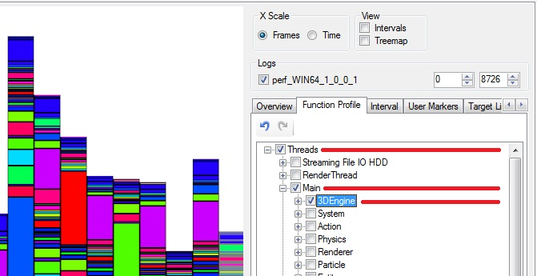
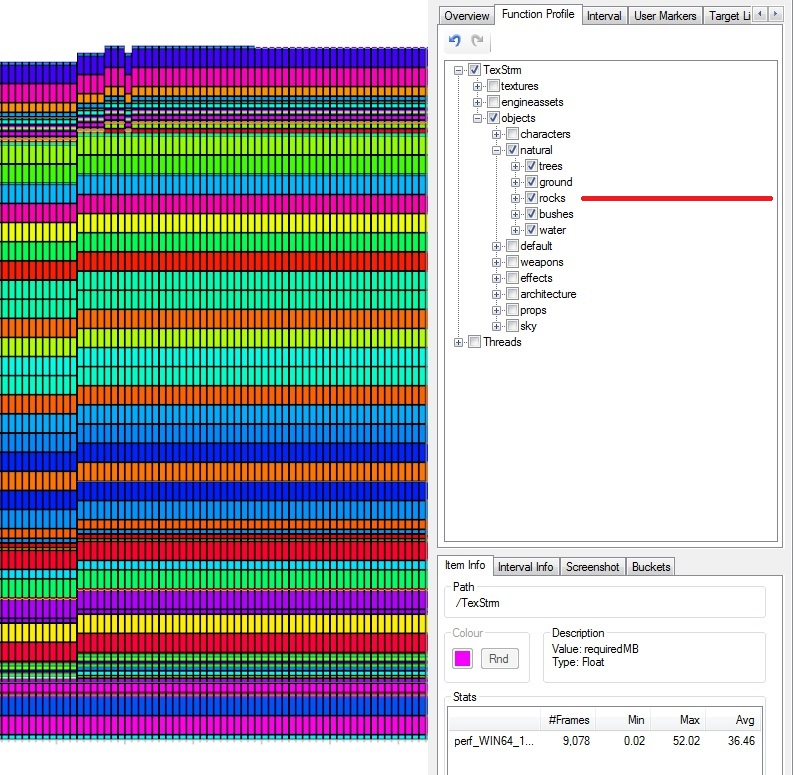
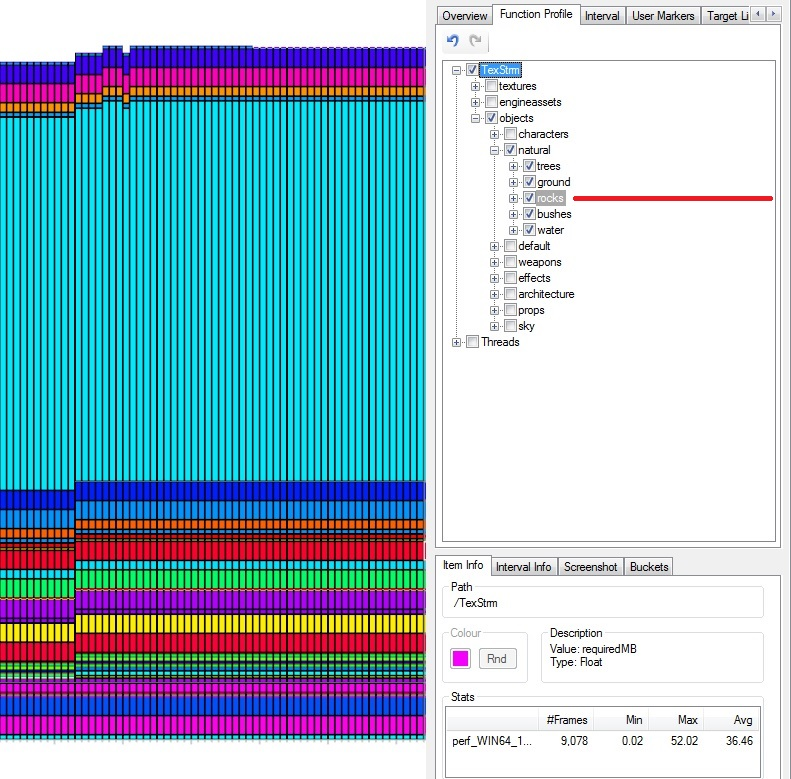
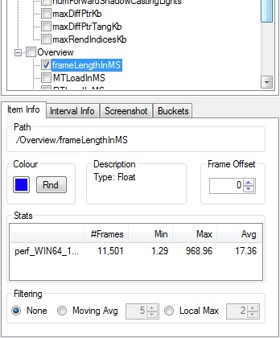
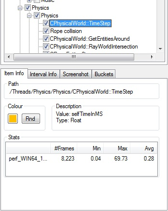
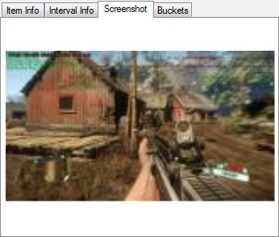
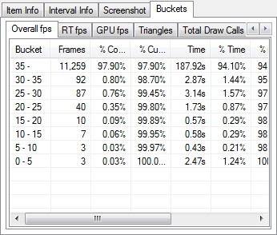
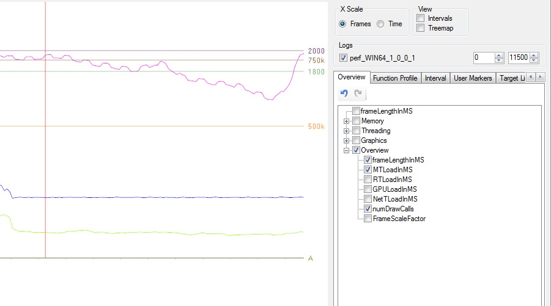
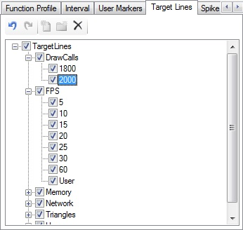
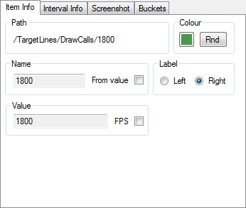

Overview
This article provides an explanation of Statoscope's features.
It will guide you through several features such as different filtering options for the main graph, User Markers to signal relevant game events, target lines, profiles and screenshots.
Plot selection
In the treeview tabs on the right hand side, e.g. Overview & Function Profile, use the tick boxes to enable/disable plots.
Chapters:

There are shortcuts for selecting items:
- CTRL+Left click on a label to select just that item.
- Right click on a label to enable/disable every item under that one in the hierarchy.
In the pictures below, the datagroup displayed is e_StatoscopeDataGroups S+ (texture memory usage).
Note the Collapsed group (grey background on the text) into one colour (Rocks).
 
History
There is an Undo/Redo button pair in the top left (of the control panel) underneath the Overview tab (see above picture).
Each tab has its own Undo/Redo feature (if applicable to the tab).
Item Info
You can find detailed information about an item in the lower right hand tab group. Statoscope allows you to control how a item's data is displayed.
The panel will show basic stats and other required information of the item currently selected in the Overview or Function Profile tab.
Overview vs Function Profile item info:
 
The line/bar color can be changed by clicking on the color button to get a color picker, or the Rnd (Random) button to choose a colour at random.
Items are given random colors as they are processed, however these can often end up being too similar and the Rnd button is an easy way to pick a different colour.
Basic stats are given in a table: the number of frames the stat is present for in the log, and the corresponding min/max/avg.
These will update in real-time when logging over a socket. In the case of hierarchical bar stats it will represent the total of the ticked children.
Item Info - Filtering the Line Statistics
Line stats can have some simple filtering applied to make it easier to see trends.
Moving Average shows the same line averaged out using the values from a number of frames either side, 5 by default.
Local Maximum is useful for things that vary consistently each frame, such as time sliced shadows. A moving average in this case isn't useful when the range of variation is large as it makes the line look misleadingly low.
Enabling either of these stats will hide the base item by default. You can only display the information in 1 mode at a time. Off, MA or LM.
Screenshots
Screenshots are useful for seeing what happened while the log was being recorded. They are only captured at 1/8 resolution to keep log size down.

To enable them, set: e_StatoscopeScreenshotCapturePeriod - number of seconds between screenshots, -1 to disable, 0 to capture constantly.
To view the screenshots during the captured session, roll the mouse over the timeline horizontally, and observe the picture updating.
Buckets
Buckets will appear depending on what data the log contains. Available buckets are: Overall fps, RT fps, GPU fps, Triangles, Total Draw Calls, Shadow Draw Calls, Draw Calls and Texture Pool.
The 5fps clamp referred to in some columns treats frames whose length is longer than 200ms (5fps) as if it was 200ms. This is useful to stop very long frames from skewing the stats too much.

Target Lines
Target lines are used as a reference for set targets. They are found as a tab in the same group as Overview & Function Profile
Below you can see the target lines being used as a reference while displaying data.

By default, we have included a selection of target lines already.
FPS will show lines at 60, 30, 25, 20, 15, 10 and 5 FPS, (or rather the equivalent ms values), memory at 211 and 240 Mb (PS3 high levels for main and RSX), and so on.

You also have the ability to add your own target lines to fine tune the view to your preference.
At the top of the tab next to the undo / redo buttons You have 3 buttons, Add Target Line / Add Folder (node) / delete item.
The item info panel controls what you want to display.
- Path: Defines where in the tree the item is stored
- Name: Give a name to the target line (that will be displayed on the left / right of the page)
- Value: Define your target value here.
- Colour: Pick one or assign a random colour (Rnd).
- Label: Decide if you want to display the Target Line name to the left or right of the data.

User Markers
User Markers are used to indicate where potentially interesting game events occur. They appear as vertical grey lines in the plot window, show up in the tool tip, and are selectable in the User Markers tab.
User Markers can be added either in code by calling:
gEnv->pStatoscope->AddUserMarker("Path", "Name");
or in the console (with quotes around Path and/or Name if they include spaces):
e_StatoscopeAddUserMarker Path Name
Path determines the hierarchy, delimited by the / character. Name can contain /s and that won't affect the hierarchy.
Many exist already, such as level start/end, invalid file access, menu navigation, etc.
Profiles
You can save out your preferred filter selections from the Profile menu.
Simply select the data you want to display in Overview / Function Profile etc... and in the profile menu, save the layout (in xml form).
Then when you want to apply the filter on another Statoscope log, just pick it from the Profile drop down menu.